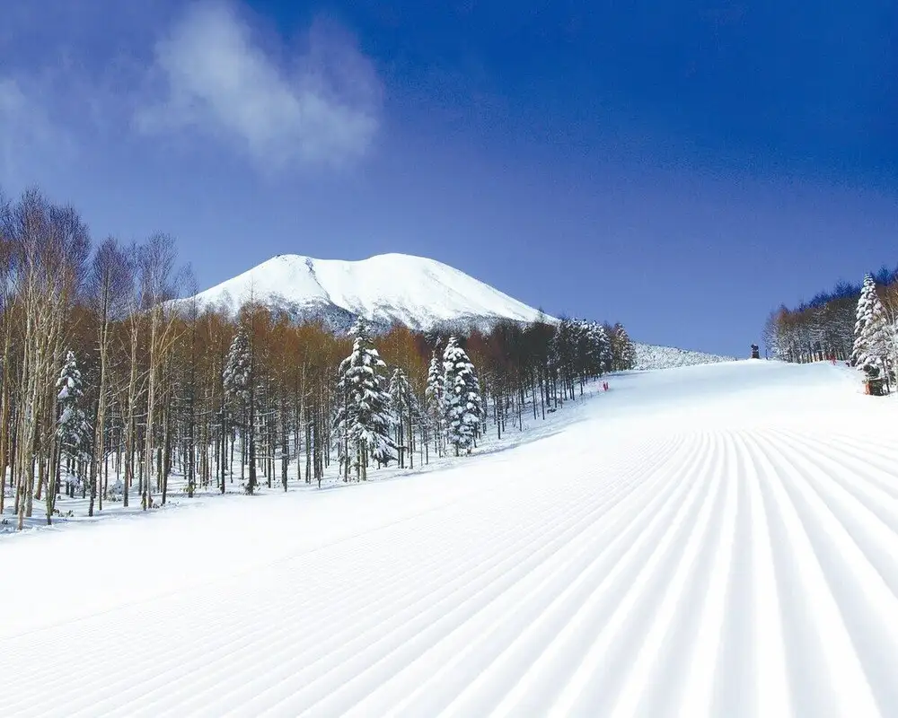
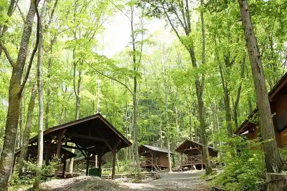
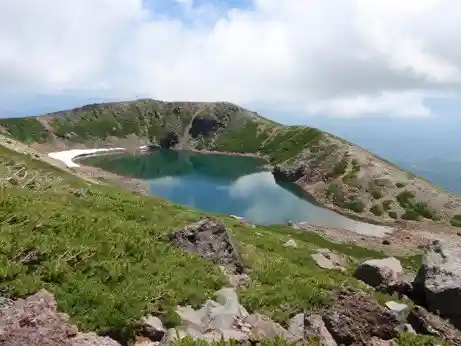
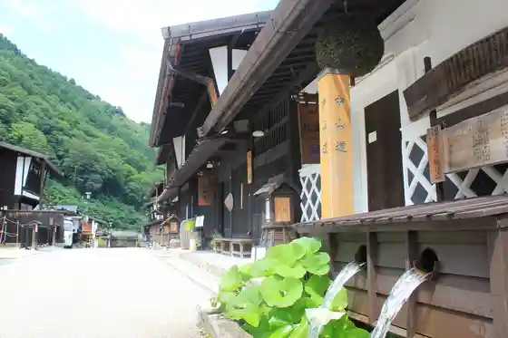
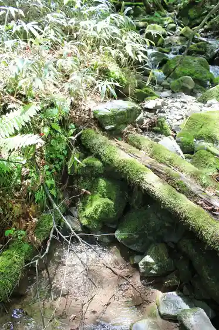

Japan / Nagano / Kisomachi
Kisomachi, Nagano
Kisomachi · Nagano
Kisomachi
Highlighted on the Nagano map.

Sights
Shinshu Kaidakogen Maia Ski Area
Kisomachi, Nagano · 0264-44-1111 · Official / source link
Kyanpingufiirudo Kisomachi Kodo
Kisomachi, Nagano · 0264-22-2766 · Official / source link

Ontake Sanza no Ike
Kisomachi, Nagano · 0264-25-6000 · Official / source link

Nakasendo Fukushima Yado
Kisomachi, Nagano · 0264-25-6000 · Official / source link

Kyu Yu
Kisomachi, Nagano · 0264-22-4000 · Official / source link

Toku Oto Tera
Kisomachi, Nagano · 0264-26-2520 · Official / source link
Nakasendo Miya no Etsu Yado
Kisomachi, Nagano · 0264-25-6000 · Official / source link
Yoshinaka Kan
Kisomachi, Nagano · 0264-26-2035 · Official / source link
Ontake Ropuei
Kisomachi, Nagano · 0264-46-2525 · Official / source link
Kaido Roman On Yado Tsutaya
Kisomachi, Nagano · 0264-22-2010 · Official / source link